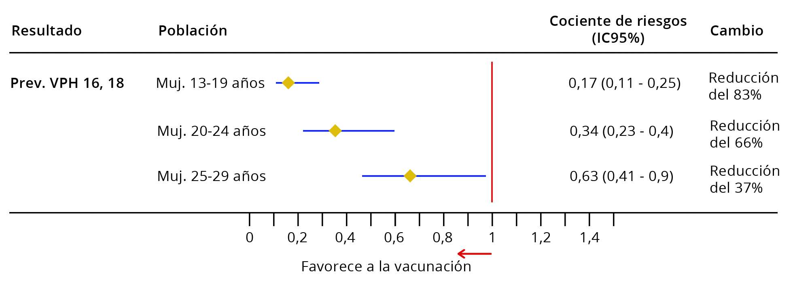

Impacto de la vacunación contra el VPH en la epidemiología del cáncer de cuello uterino
En esta unidad revisaremos el impacto de la vacunación contra el VPH en la epidemiología del cáncer de cuello uterino.
En junio de 2020, 107 países ya habían introducido las vacunas contra el VPH en sus programas nacionales de inmunización (Figura 1)
FIGURA 1
Estados miembros de la OMS que ya incluyen la vacunación contra el VPH en su programa nacional de inmunización en junio de 2020.
No incluye territorios, estados asociados ni regiones semiautónomas.
La evaluación del impacto de la vacunación contra el VPH es difícil debido a la larga latencia entre la infección por el VPH y el cáncer. Afortunadamente, la evolución natural del cáncer de cuello uterino nos proporciona múltiples criterios de valoración biológicos intermedios que pueden medirse (como la infección por el VPH, las lesiones precancerosas y el cáncer), aunque esto también aumenta la complejidad de la evaluación. Otros retos son la dificultad para identificar fuentes de información de alta calidad y la coexistencia de los programas de vacunación contra el VPH con las actividades de cribado del cáncer de cuello uterino, que también contribuyen a reducir su incidencia y mortalidad.
Debido a la larga latencia desde la infección hasta el cáncer, se han necesitado 15 años para observar el impacto de las vacunas contra el VPH en el cáncer de cuello uterino invasivo.
La vacunación puede provocar distintos tipos de efectos, tanto a escala individual como poblacional. Para entender el impacto de la vacunación contra el VPH en la epidemiología del cáncer de cuello uterino, primero debemos distinguir entre los conceptos de eficacia y efectividad de la vacuna.
La eficacia de la vacuna se refiere a la protección que esta ofrece a un individuo, en circunstancias ideales, en ausencia de protección de grupo, mientras que la efectividad global de la vacuna mide el impacto atribuible a la vacunación, a lo largo del tiempo, a escala poblacional (es decir, la reducción de la prevalencia del VPH en la población), con independencia del estado de vacunación notificado del individuo. La efectividad global de la vacuna incluye la efectividad total y la efectividad indirecta.
La efectividad total mide el efecto directo de la vacunación en las personas vacunadas en condiciones reales, mientras que la efectividad indirecta ofrece una estimación del impacto de la vacunación entre las personas no vacunadas de una población vacunada (protección de grupo, por ejemplo, mujeres de edad avanzada y parejas sexuales de mujeres vacunadas) [1]Halloran ME, Struchiner CJ, Longini IM. Study designs for evaluating different efficacy and effectiveness aspects of vaccines.,[2]Baussano I, Tshomo U, Tenet V, Heideman DAM, Wangden T, Franceschi S, et al. Prevalence of Human Papillomavirus and Estimation of Human Papillomavirus Vaccine Effectiveness in Thimphu, Bhutan, in 2011-2012 and 2018 : A Cross-sectional Study. (FIGURA 2).
FIGURA 2
Marco analítico para evaluar el impacto de la vacunación contra el VPH.
Baussano et al. [2]Baussano I, Tshomo U, Tenet V, Heideman DAM, Wangden T, Franceschi S, et al. Prevalence of Human Papillomavirus and Estimation of Human Papillomavirus Vaccine Effectiveness in Thimphu, Bhutan, in 2011-2012 and 2018 : A Cross-sectional Study.

Para abordar el impacto de la vacunación contra el VPH entre los periodos pre- y post-vacunación, utilizaremos los resultados de una revisión sistemática y un metanálisis de 2019 que incluye datos de más de 60 millones de individuos (40 estudios) y hasta 8 años de seguimiento tras de la vacunación. Se realizaron estudios en 14 países de renta alta (Australia, Bélgica, Canadá, Dinamarca, Alemania, Italia, Países Bajos, Nueva Zelanda, Noruega, España, Suecia, Inglaterra, Escocia y Estados Unidos) que ya han introducido la vacuna bivalente o tetravalente en sus programas nacionales de vacunación. Los resultados de los programas de vacunación, las coberturas de vacunación alcanzadas, los protocolos de cribado del cáncer de cuello uterino y las tasas de participación de la población variaron sustancialmente entre los países [3]Drolet M, Bénard É, Pérez N, Brisson M, HPV Vaccination Impact Study Group. Population-level impact and herd effects following the introduction of human papillomavirus vaccination programmes: updated systematic review and meta-analysis..
Como se esperaba, el primer impacto observado de la vacunación contra el VPH fue la reducción de la prevalencia de las infecciones por el VPH y de las verrugas anogenitales. La Figura 3 muestra que, 5-8 años después del inicio de los programas de vacunación para el VPH, la prevalencia de infección por el VPH 16 y 18 disminuyó en niñas y mujeres de 13 a 29 años, con una mayor disminución (83%) en las de 13 a 19 años [3]Drolet M, Bénard É, Pérez N, Brisson M, HPV Vaccination Impact Study Group. Population-level impact and herd effects following the introduction of human papillomavirus vaccination programmes: updated systematic review and meta-analysis..
FIGURA 3
Cambios en la prevalencia de infecciones por el VPH 16 y VPH 18 entre los períodos pre- y post- vacunación.
Adaptado de Drolet et al. [3]Drolet M, Bénard É, Pérez N, Brisson M, HPV Vaccination Impact Study Group. Population-level impact and herd effects following the introduction of human papillomavirus vaccination programmes: updated systematic review and meta-analysis.

VPH: virus del papiloma humano; IC del 95 %: intervalo de confianza del 95%γ: después de 5-8 años de seguimiento
Cuando el intervalo de confianza del 95 % (IC95%) del cociente de riesgos contiene el 1 (por ejemplo, IC95 %: 0,9-1,1), implica que no hay diferencia entre los periodos pre- y post- vacunación.
Aunque hay poca información sobre la eficacia de la vacuna contra el VPH en los países con recursos limitados, la información disponible confirma efectos similares a los observados en los países de ingresos altos. En Thimphu, la capital de Bután, el fuerte descenso de la prevalencia de los tipos de VPH incluidos en las vacunas (del 8,3 % al 1,4 %) proporciona la primera prueba de la eficacia de un programa nacional de vacunación contra el VPH de alta cobertura en un país de renta media-baja [2]Baussano I, Tshomo U, Tenet V, Heideman DAM, Wangden T, Franceschi S, et al. Prevalence of Human Papillomavirus and Estimation of Human Papillomavirus Vaccine Effectiveness in Thimphu, Bhutan, in 2011-2012 and 2018 : A Cross-sectional Study..
Un segundo impacto observado fue la disminución significativa de los casos de verrugas anogenitales entre las niñas y mujeres de 15 a 29 años en los primeros 4 años tras la aplicación de la vacuna tetravalente contra el VPH. Después de 5-8 años de vacunación, los diagnósticos de verrugas anogenitales disminuyeron en las mujeres de 15 a 29 años, con la mayor disminución (67 %) en las de 15 a 19 años (FIGURA 4).
También se demostró que los programas de vacunación implementados sólo en niñas ofrece inmunidad de grupo después de 5 a 8 años de la vacunación contra el VPH. Los casos de verrugas anogenitales disminuyeron no solo entre las chicas vacunadas, sino también entre los chicos y hombres no vacunados de 15 a 24 años, y entre las mujeres mayores no vacunadas de 25 a 29 años [3]Drolet M, Bénard É, Pérez N, Brisson M, HPV Vaccination Impact Study Group. Population-level impact and herd effects following the introduction of human papillomavirus vaccination programmes: updated systematic review and meta-analysis..
Lehtinen et al. compararon la efectividad de dos estrategias de vacunación, sin distinción de género y exclusivamente en niñas, contra las infecciones por VPH de alto riesgo. Para ello, realizaron un ensayo aleatorizado comunitario con una cobertura vacunal entre baja y moderada de la vacuna bivalente contra el VPH. Aunque se observó inmunidadde grupo en las mujeres no vacunadas contra el VPH con ambas estrategias, el control de las infecciones por VPH 18/31/33 y 35 fue mejor cuando se había usado unaestrategia de vacunación sin distinción de género [4]Lehtinen M, Luostarinen T, Vänskä S, Söderlund-Strand A, Eriksson T, Natunen K, et al. Gender-neutral vaccination provides improved control of human papillomavirus types 18/31/33/35 through herd immunity: Results of a community randomized trial (III).,[5]Lehtinen M, Söderlund-Strand A, Vänskä S, Luostarinen T, Eriksson T, Natunen K, et al. Impact of gender-neutral or girls-only vaccination against human papillomavirus-Results of a community-randomized clinical trial (I)..
IDEA CLAVE:
En el futuro, este efecto de inmunidad de grupo en relación con las verrugas anogenitales y con infecciones VPH de alto riesgo podría observarse también en las lesiones precancerosas relacionadas con el VPH, tanto para mujeres vacunadas como aquellas no vacunadas.
FIGURA 4
Cambios en la incidencia de verrugas anogenitales entre los períodos pre- y post- vacunación
Adaptado de Drolet et al. [3]Drolet M, Bénard É, Pérez N, Brisson M, HPV Vaccination Impact Study Group. Population-level impact and herd effects following the introduction of human papillomavirus vaccination programmes: updated systematic review and meta-analysis.
IC del 95 %: intervalo de confianza del 95%
γ: después de 5-8 años de seguimiento